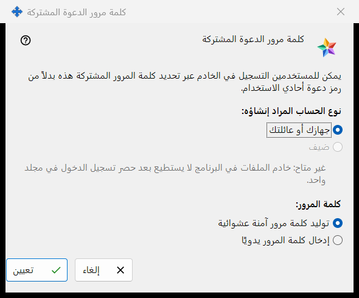
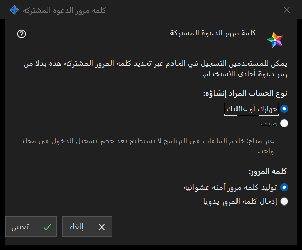

كلمة مرور الدعوة المشتركة
الغرض من هذه النافذة
تتيح هذه النافذة للمستخدمين التسجيل على الخادم بكلمة مرور مشتركة واحدة بدلًا من رمز دعوة يُستخدم مرة واحدة. افتحها بتحديد المربع كلمة مرور الدعوة المشتركة في مجموعة الدعوات ضمن إعدادات خادم التبادل، أو بالزر تعيين كلمة المرور المشتركة.. المجاور له.


بهذا الترتيب
- اختر نوع الحساب.
- اختر هل يولّد البرنامج كلمة المرور أم تكتبها أنت.
- اضغط تعيين.
- إذا وُلّدت كلمة المرور فانسخها من النافذة التي تعرضها مرة واحدة.
- لإيقاف قبولها ألغِ تحديد المربع كلمة مرور الدعوة المشتركة وأكّد.
عناصر النافذة
نوع الحساب
نوع الحساب المراد إنشاؤه: يعرض الخيارين جهازك أو عائلتك وضيف. الخيار ضيف معطّل، ويذكر السطر تحته السبب: خادم الملفات في البرنامج لا يستطيع حصر تسجيل الدخول في مجلد واحد. وإذا كانت كلمة مرور مشتركة مفعّلة بالفعل فإن نوعها الحالي يكون محدّدًا مسبقًا. وإذا كان هذا النوع الموجود ضيفًا فإن الزر تعيين يكون معطّلًا؛ ومع ذلك يمكن إيقاف كلمة المرور المشتركة.
كلمة المرور
كلمة المرور: تعرض الخيارين توليد كلمة مرور آمنة عشوائية (محدّد افتراضيًا) وإدخال كلمة المرور يدويًا. وبعد الضغط على تعيين تُطلب كلمة المرور المكتوبة يدويًا في نافذة كلمة مرور تتحقق من السياسة: 10 أحرف على الأقل، مع حرف لاتيني كبير وحرف لاتيني صغير ورقم. وإلغاء تلك النافذة يعيدك إلى هنا.
تعيين
يرسل الزر تعيين كلمة المرور ونوع الحساب إلى الخادم ويفعّل كلمة المرور المشتركة. وتظهر كلمة المرور المولَّدة مرة واحدة في نافذة مستقلة: انسخها هناك، فلا يمكن قراءتها مرة أخرى. وكل من يعرف كلمة المرور يستطيع تسجيل حساب من النوع المختار، فلا تسلّمها إلا لمن تريد قبوله. وبعد النجاح تعرض الصفحة: تم حفظ كلمة مرور الدعوة المشتركة وتفعيلها. ويقرأ سطر الحالة تحت مربع الاختيار: كلمة المرور المشتركة مفعّلة (نوع الحساب: ..).
الإيقاف
يؤدي إلغاء تحديد المربع إلى طرح السؤال: هل تريد تعطيل كلمة مرور الدعوة المشتركة؟ سيصبح التسجيل الجديد بها غير ممكن. والإجابة الافتراضية هي لا. وبعد الضغط على نعم تعرض الصفحة: تم تعطيل كلمة مرور الدعوة المشتركة. ويقرأ سطر الحالة: كلمة المرور المشتركة معطّلة.
إلغاء
يغلق الزر إلغاء أو Esc النافذة دون تغيير أي شيء. وإذا فتحتها بتحديد المربع عاد المربع إلى حالته السابقة.